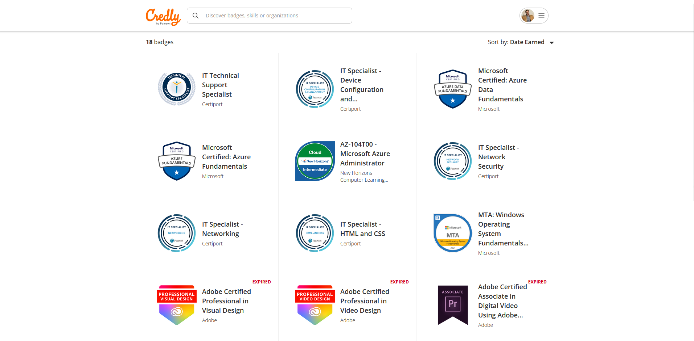
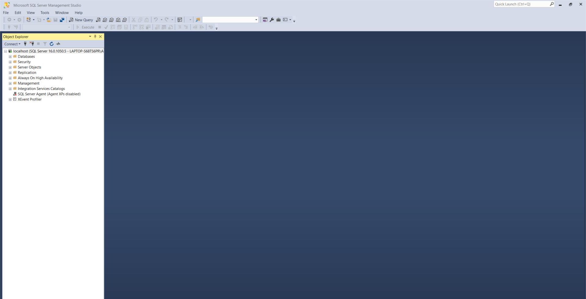
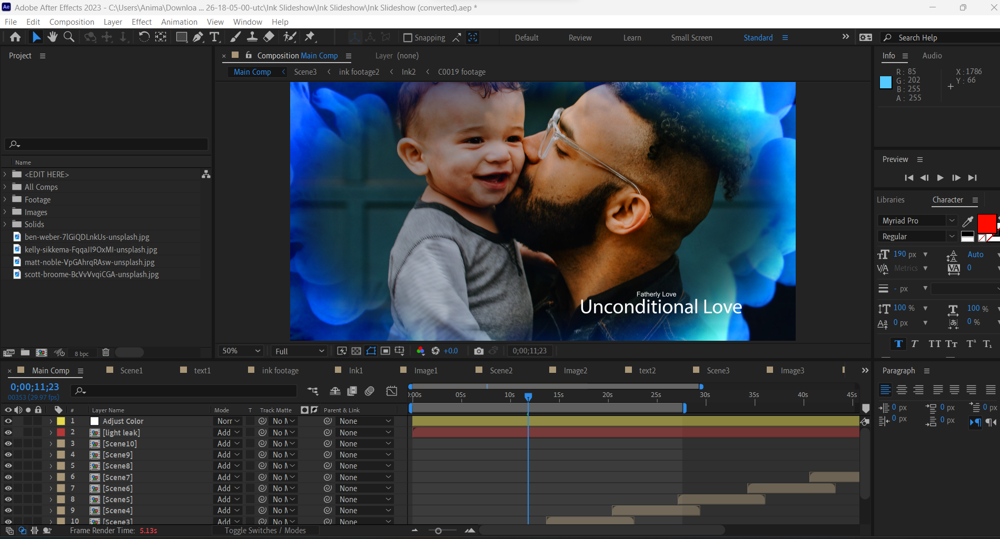
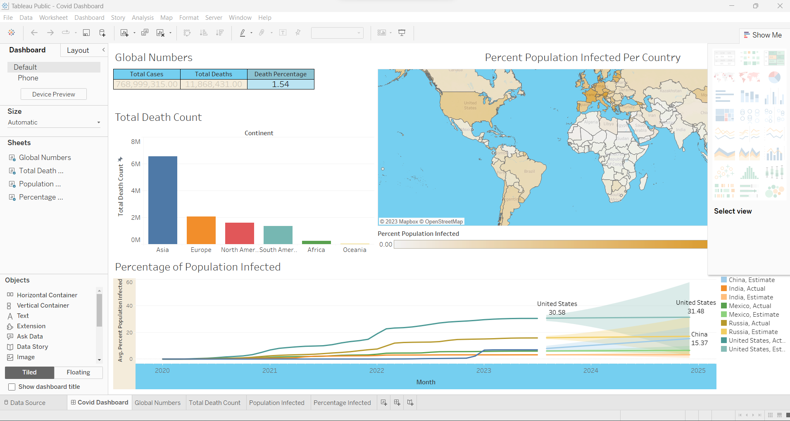
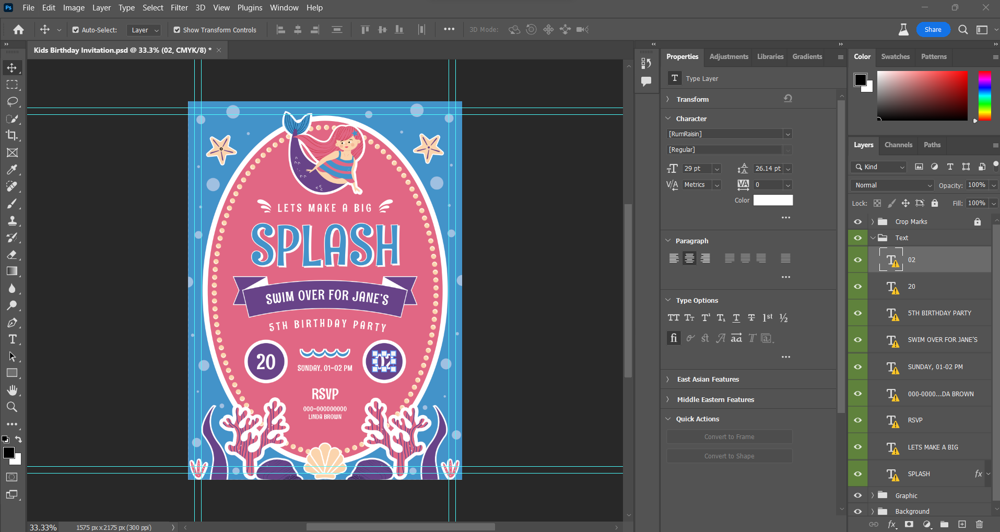
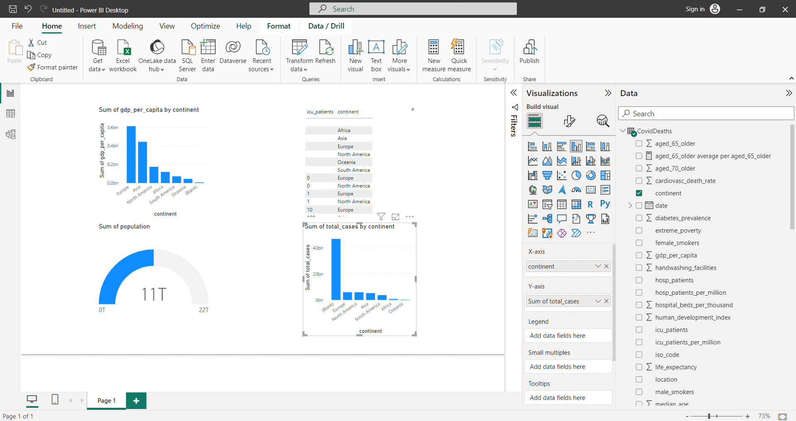
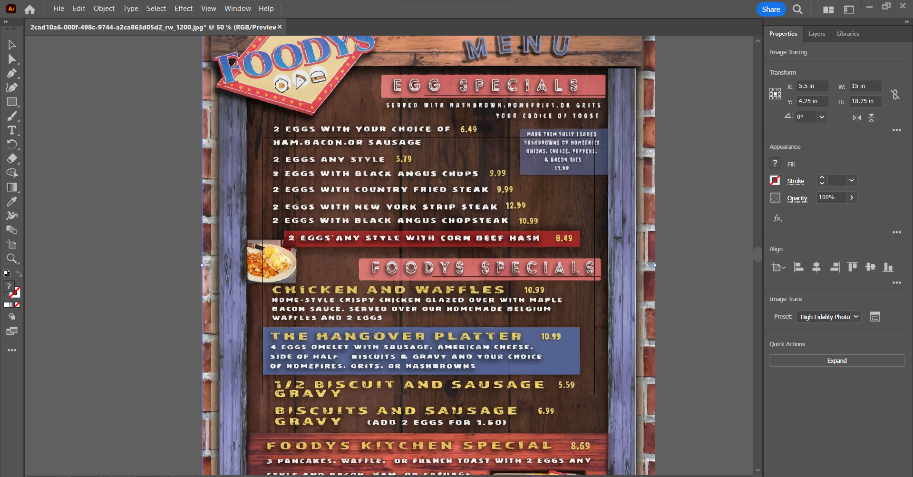

August 05, 2023
Credly is a comprehensive online platform that serves as a centralized hub for individuals to access and showcase their various
ertifications and knowledge badges. This platform enables users to compile a comprehensive list of their acquired credentials, ranging from professional certifications to specialized skills and achievements. Through Credly, one can create a digital portfolio that highlights their expertise and
accomplishments, making it convenient for employers, colleagues, and peers to gain insights into their skill set and qualifications.


Program Summary: I find that SSMS, which stands for SQL Server Management Studio, serves as an invaluable integrated environment for overseeing various aspects
of SQL infrastructure. Whenever I need to interact with, fine-tune, control, oversee, or even create components within SQL Server, Azure SQL Database, Azure SQL Managed Instance, SQL Server on Azure VM, and Azure Synapse Analytics, SSMS is my go-to tool.
Its versatility allows me to handle a multitude of tasks effortlessly.

Program Summary: Adobe After Effects is a program I frequently use for my projects. It's a powerful software developed by Adobe Systems that's focused on digital visual effects, motion graphics, and compositing.
I really appreciate how After Effects lets me merge different media elements such as video clips, images, text, and audio. This ability to combine these elements allows me to craft complex and dynamic
visual compositions that truly enhance the impact of my projects.

Program Summary: I'm familiar with Tableau Public, a robust data visualization tool that I often use for projects.
It's fantastic for crafting interactive visualizations and dashboards, which I can easily share with a wider audience. I appreciate that Tableau Software developed this version specifically for public use. With Tableau Public, I can seamlessly connect to diverse data sources, bring in data, and then turn it into meaningful visuals like charts, graphs, maps, and more.
This tool is definitely a valuable asset for creating engaging data-driven presentations.

Program Summary: Photoshop is a tool I use frequently for my projects. It's a powerful software application developed by Adobe Systems that's incredibly useful for editing and manipulating digital images. I often turn to Photoshop for tasks like enhancing images, altering visuals, and creating new content. Being commonly employed by photographers, designers, artists, and professionals in various fields,
it provides a comprehensive set of tools and features that allow me to retouch photos, design graphics, and create intricate artworks.

Program Summary:
In my projects, I've extensively used Microsoft Power BI, which is an all-inclusive suite of business analytics tools and services created by Microsoft. With this program, I've been able to gather, transform, visualize, and share valuable data insights throughout our organization. One of the most empowering features of Power BI is its ability to connect to a diverse array of data sources, allowing me to effortlessly create interactive reports and dashboards.
This, in turn, has enabled me to make well-informed decisions backed by data-driven insights.

Program Summary: I'm familiar with Adobe Illustrator, a powerful vector graphics editor created by Adobe Inc. As a graphic designer,
artist, and illustrator, I often turn to Illustrator to craft and manipulate vector-based artwork. Unlike pixel-based raster graphics, vector graphics rely on mathematical equations and points, which means I can adjust their size and form without sacrificing image clarity.
With a diverse array of tools and features at my disposal, Illustrator allows me to produce intricate and accurate illustrations, logos, typography, and various other graphical components for my projects.